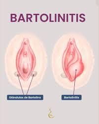

Bartolinitis
Descripción
La bartolinitis es una inflamación de las glándulas de Bartolino, situadas a ambos lados de la abertura vaginal. Generalmente causada por infecciones bacterianas, puede provocar dolor, hinchazón y molestias en la zona genital. En algunos casos, la inflamación puede llevar a la formación de abscesos, que requieren tratamiento médico para aliviar los síntomas y prevenir complicaciones.
Principales Causas
- La causa más común de la bartolinitis es una infección bacteriana. Las bacterias que suelen causar esta inflamación incluyen Escherichia coli y Chlamydia trachomatis. Estas infecciones pueden resultar de bacterias que normalmente viven en la piel o en el tracto genital.
- Obstrucción del conducto de la glándula de Bartolino: La obstrucción del conducto que drena las secreciones de la glándula de Bartolino puede llevar a la acumulación de fluido, lo que provoca inflamación e infección. Esta obstrucción puede ser causada por infecciones, traumatismos o cambios en el tejido.
- Infecciones de transmisión sexual (ITS): Infecciones de transmisión sexual como la gonorrea o la clamidia pueden provocar inflamación e infección de las glándulas de Bartolino.
- Cambios hormonales: Fluctuaciones hormonales, como las que ocurren durante el embarazo o la menopausia, pueden afectar la función de las glándulas de Bartolino y contribuir a la inflamación.
- Traumatismos o irritación: El trauma físico en el área genital o el uso de productos irritantes, como ciertos tampones o productos de higiene, pueden provocar inflamación de las glándulas de Bartolino.
- Absceso: La formación de un absceso debido a la infección de la glándula de Bartolino puede causar dolor, hinchazón y malestar.
Síntomas
- Dolor y sensibilidad: El área alrededor de la glándula de Bartolino afectada puede volverse dolorosa y sensible al tacto.
- Hinchazón: Puede presentarse hinchazón o bultos visibles cerca de la abertura vaginal, que pueden ser dolorosos.
- Enrojecimiento: La piel alrededor de la glándula afectada puede enrojecerse debido a la inflamación.
- Secreción: Puede haber secreción anormal de la glándula afectada, que puede ser purulenta si hay una infección.
- Dificultad para caminar o sentarse: El dolor y la hinchazón pueden dificultar el caminar o sentarse cómodamente.
- Fiebre: En casos de infección severa o absceso, puede haber fiebre y malestar general.
Pruebas
- Examen físico: El médico realiza un examen físico para palpar la zona alrededor de las glándulas de Bartolino y detectar cualquier hinchazón, dolor o masa anormal.
- Cultivo de secreción: Si hay secreción anormal, se puede tomar una muestra de esta secreción para cultivos bacterianos. Esto ayuda a identificar el microorganismo causante de la infección.
- Ultrasonido: Se utiliza un ultrasonido para visualizar la glándula de Bartolino y detectar cualquier obstrucción, quiste o absceso en la glándula.
Tratamiento
- Antibióticos: El tratamiento generalmente incluye antibióticos para combatir la infección bacteriana. El tipo de antibiótico prescrito puede depender del microorganismo causante de la infección, identificado a través de cultivos.
- Baños de asiento: Se recomienda realizar baños de asiento con agua tibia para aliviar el dolor y reducir la inflamación. Esto puede ayudar a drenar cualquier secreción acumulada y a calmar la zona afectada.
- Drenaje del absceso: Si se forma un absceso, puede ser necesario realizar un procedimiento de drenaje para eliminar el pus y aliviar la presión. Este procedimiento puede realizarse bajo anestesia local en la consulta del médico.